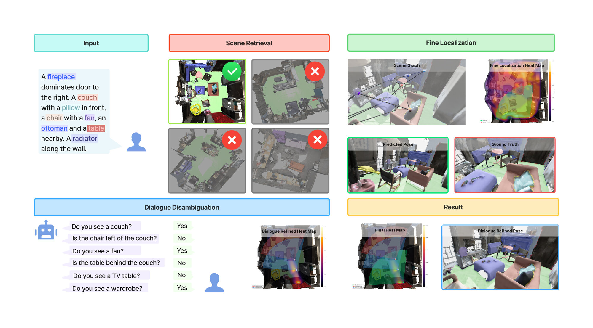
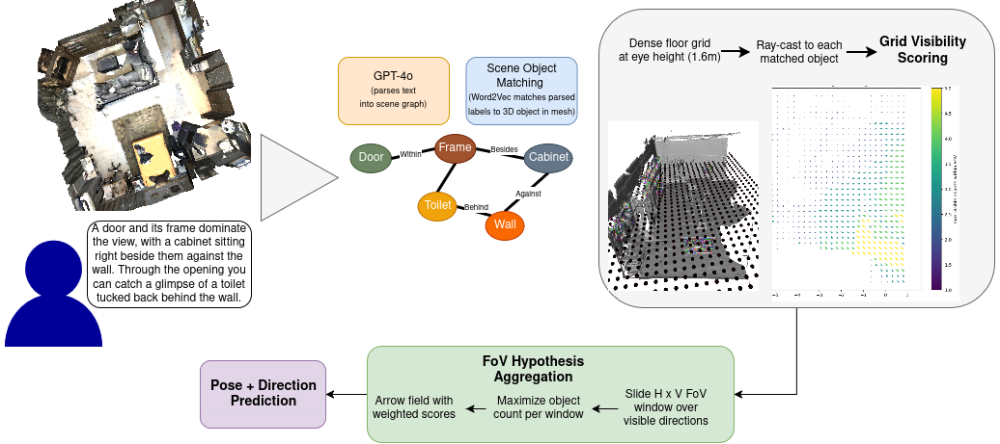
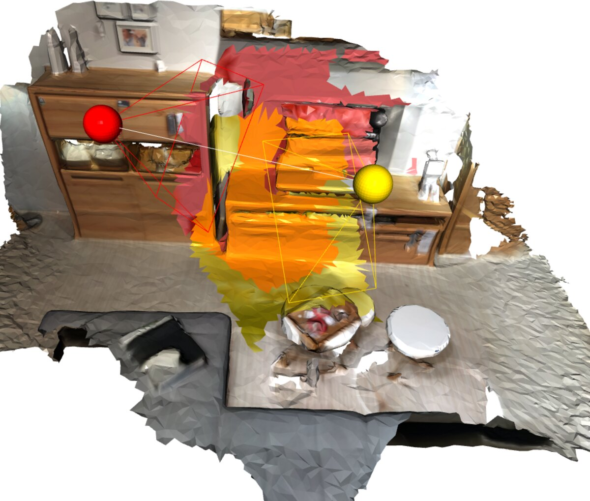

LangLoc: “Tell Me What You See”
European Conference on Computer Vision (ECCV) 2026
Fine-grained indoor localization from a natural-language description — no camera, no GPS.
+8 pp Top-1 retrieval · 0.95 m median pose · 13k+ queries over 1.3k+ scans
European Conference on Computer Vision (ECCV) 2026
Fine-grained indoor localization from a natural-language description — no camera, no GPS.
+8 pp Top-1 retrieval · 0.95 m median pose · 13k+ queries over 1.3k+ scans
TL;DR. LangLoc is the first to resolve an intra-scene pose from language alone — prior work stops at coarse scene retrieval. It (1) retrieves the scene with a dual-branch GATv2 + CLIP encoder, (2) estimates position and heading by scoring a dense floor grid through ray-cast object visibility, and (3) resolves residual ambiguity with a Bayesian yes/no dialog.
Localize from a sentence — private and lightweight, with no images to send.
Dual-branch GATv2 + CLIP retrieval beats the previous best.
Ray-cast floor-grid scoring recovers position and heading.
A Bayesian module asks targeted questions to pin down ambiguous poses.
We tackle fine-grained indoor localization from natural language: given a free-form description of one’s surroundings, estimate the observer’s 2D position and heading within a known 3D environment. Language queries are lightweight, privacy-preserving, and need no camera — yet prior work stops at coarse scene retrieval and cannot resolve an intra-scene pose. We close this gap with LangLoc, a three-stage pipeline that (i) retrieves the correct scene via a dual-branch GATv2 encoder with CLIP semantic features, surpassing the previous best by 8 percentage points in Top-1 recall; (ii) estimates position and heading by scoring a dense floor grid through ray-cast object visibility, reaching a median error of 0.95 m; and (iii) resolves residual ambiguity through a Bayesian dialog module that asks targeted yes/no questions and updates a pose posterior until the location is pinpointed. To support this task we contribute a benchmark of 13,000+ pose-indexed natural-language descriptions over 1,300+ indoor 3D scans.

1. Scene retrieval. A dual-branch GATv2 encoder with CLIP semantic features embeds the text-derived query graph and the database scene graphs into a shared space, ranking candidate scenes by a blend of learned-embedding, global-CLIP, and label-overlap similarity — improving Top-1 recall by 8 percentage points over prior work.
2. Fine localization. Within the retrieved scene, LangLoc samples a dense floor grid and scores each candidate viewpoint by ray-casting which described objects are visible, yielding a 2D position and a heading direction — reaching a 0.95 m median position error without any image.
3. Dialog disambiguation. When a description matches several viewpoints, a Bayesian module asks targeted yes/no questions (e.g. “Is there a chair to the left of the table?”) and updates a pose posterior until the location is resolved.

Predicted (yellow) vs. ground-truth (red) viewing frustums on 3RScan and ScanNet. LangLoc recovers both the floor position and the heading from language alone.

@inproceedings{langloc2026,
title = {LangLoc: Tell Me What You See},
author = {Panwar, Shaurya Kishore and Zendehdel Nobari, Roham and
Lau, Shirley Feng Yi and Shaik, Abu Bakr Rahman and
G\"unther, Manuel and Pollefeys, Marc and Barath, Daniel},
booktitle = {Proceedings of the European Conference on Computer Vision (ECCV)},
year = {2026},
}The final entry (pages, DOI) will be added once the ECCV 2026 proceedings are published.